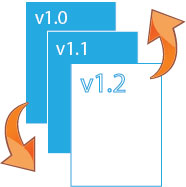
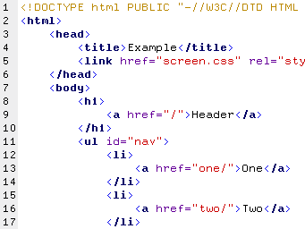
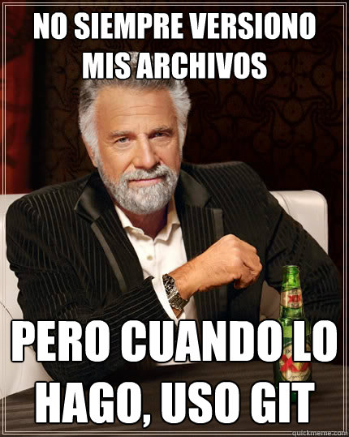
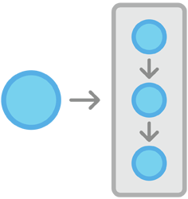
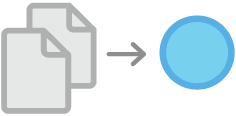
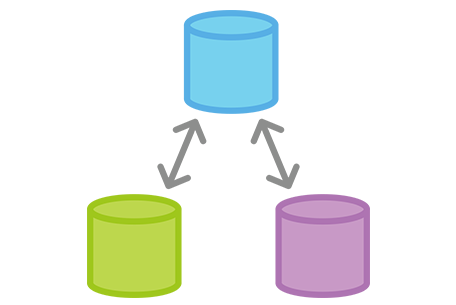
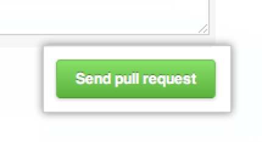

Taller de Git
Para periodistas
De cara al primer hackatón de Hacks/Hackers Rosario
Rosario, Julio de 2013
Programa
Charla introductoria
- ¿Qué es Git?
- Para qué lo usamos los programadores
- Ventajas de tener un archivo bajo git
- Algunos conceptos importantes
- ¿Y qué es GitHub?
- GitHub como comunidad
- Repositorios públicos y privados
- Más conceptos importantes
Práctica!
- Registrarse en GitHub
- Bajar e instalar la aplicación de GitHub para Windows
- Clonar un repositorio
- Commitear cambios y pushearlos. Hacer pull.
- Forkear
¿Qué es Git?
+ Una herramienta para versionar código fuente
+ Versionar: registrar cambios

+ Código fuente: texto con las instrucciones
de un programa

de un programa
¿Para qué lo usan los programadores?
+ Les interesa registrar los cambios que se hacen sobre el código fuente
+ Pueden querer volver a una versión anterior de un archivo
+ Se puede comparar un archivo actual con sus versiones anteriores
+ Git también es un contenedor -repositorio- de código fuente

Ventajas de tener un archivo bajo Git
+ Revisión de cambios
+ Copia de seguridad (backup)
+ Compartir y colaborar
Algunos conceptos importantes
+ Repositorio
Concepto de "proyecto". Contenedor de archivos relacionados entre sí
+ Clonar (un repositorio)
Copiar un repositorio a nuestra computadora.
+ Commit
Instantánea -fotocopia- de uno o más archivos que se guarda en el repositorio.


¿Y qué es GitHub?
+ Un proveedor de servicio de Git
+ GitHub almacena repositorios de manera segura y económica
+ Un servicio de Git es indispensable para coordinar el trabajo de muchas personas

GitHub como comunidad

GitHub es popular porque ofrece valor agregado:
+ Wiki
+ Tickets
+ Social coding:
+ Follow a otros usuarios y proyectos
+ Favear proyectos
+ Facilita que terceros contribuyan a un proyecto
Repositorios en GitHub
+ Públicos
Son gratis y están orientados a proyectos de software libre
+ Privados
Podés pagar si querés tener repositorios que no sean visibles públicamente
Más conceptos importantes
+ Fork
Una especie de clonado de un repositorio, pero hacia nuestra cuenta de GitHub.
+ Pull request
Solicitud al dueño del repositorio original -que forkeamos- de revisar nuestras mejoras propuestas.
Un pull request se hace desde nuestra copia del repositorio (el fork) hacia el original.
Un pull request se hace desde nuestra copia del repositorio (el fork) hacia el original.

Práctica
- Registrarse en GitHub [http://www.github.com]
- Bajar e instalar la aplicación de GitHub para Windows
- Clonar un repositorio
- Editar archivos
Localmente con cualquier editor. Directamente en la web de GitHub. - Commitear cambios.
- Pushear
El push puede ser rechazado - Pullear
Puede haber conflictos. - Forkear
Crear un branch. Hacer cambios. Pushear el branch. Abrir un pull request.